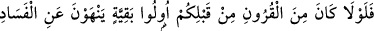
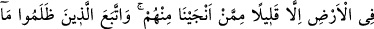
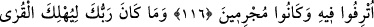
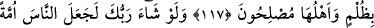
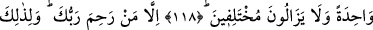
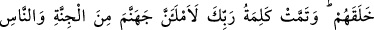
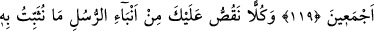
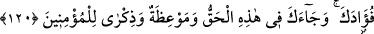
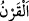
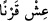

PEYGAMBERLERİN HABERLERİ
116. Sizden önceki asırlarda yeryüzünde (insanları) bozgunculuktan alıkoyacak
faziletli kimseler bulunsaydı ya! Fakat onlardan, kurtuluşa erdirdiğimiz az bir kısmı
müstesnadır (bunlar görevlerini yaptılar). Zulmedenler ise kendilerine verilen
refahın peşine düştüler. Zaten günahkâr idiler.
117. Halkı iyi kimseler olduğu halde Rabb’in haksız yere memleketleri helâk
etmez.
118. Rabb’in dileseydi bütün insanları bir tek ümmet yapardı. (Fakat) onlar
ihtilâfa düşmeye devam edeceklerdir.
119. Ancak Rabb’inin merhamet ettikleri müstesnâdır. Zâten onları bunun için
yarattı. Rabb’inin: “Andolsun ki cehennemi tümüyle cinlerle ve insanlarla
dolduracağım!” sözü yerini buldu.”
120. Peygamberlerin haberlerinden senin kalbini (tatmin ve) teskin edeceğimiz
her haberi sana anlatıyoruz. Bunda sana hak, mü’minlere de bir öğüt ve bir uyarı
gelmiştir.
“Sizden önceki asırlarda” helâk olmuş nesillerde “yeryüzünde” fesad çıkaranları
“bozgunculuktan alıkoyacak faziletli kimseler” hayırlı ve faziletli kişiler “bulunsaydı
ya!” Yâni öyle yapmaları gerekirken, üzerlerine azab inmemesi için aralarından bu işi
yapacak fazilet sahipleri çıkmadı.
Bir asırda yaşayanların tümü, kendilerinden sonrakilere göre “karn/asır, nesil”dir.
Çünkü, onlar daha önce gelmişlerdir. el-Kamûs’ta şöyle der: “__WORD__”, yüz sene demektir.
En doğru görüş budur. Çünkü Peygamber Efendimiz (a.s.) bir çocuğa: “__WORD__ (Bir karn